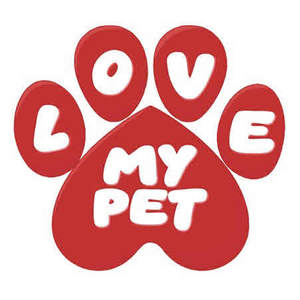

Trade Mark Journal No.2025/016 18 April 2025
UK00004184497 4 April 2025 (20,21)

- Class 20
- Scratching posts for cats; Dog houses [kennels]; Dog kennels; Pet houses; Dog beds; Furniture for house, office and garden; Kennels for household pets; Dog baskets; Pet furniture; Pet crates; Cat beds; Kennels; Bird houses; Inflatable pet beds; Beds for household pets; Cat trees; Pet grooming tables; Step stools; Step stools, not of metal; Step ladders, not of metal; Dog tags, not of metal; Step ladders made of wood; Non-metal dog tags; Step ladders made of plastics; Steps [ladders], not of metal; Dispensers, not of metal, for dog waste bags; Dispensers for dog waste bags, fixed, not of metal; Beds for birds; Nesting boxes for animals; Cat baskets; Beds for animals; Beds for pets; Animal housing and beds; Portable beds for pets; Beds, bedding, mattresses, pillows and cushions; Sofa beds; Bed chairs; Pet cushions; Cushions (Pet -); Sleeping mats; Nap mats [cushions or mattresses]; Bath pillows; Sleeping mats for camping [mattresses]; Barrels (Non-metallic -) for the identification of pet animals.
- Class 21
- Toothbrushes for animals; Litter trays for pet animals; Mangers for animals; Combs for animals; Food containers for pet animals; Mangers for animals [troughs for livestock]; Indoor terrariums for animals; Cages for pets; Fur brushes for animals; Litter scoops for use with pet animals; Drinking troughs for animals; Pet feeding bowls; Pet feeding dishes; Pet feeding bowls, automatic; Animal-activated pet feeders; Pet feeding and drinking bowls; Electronic pet feeders; Automatic pet feeders; Feeding vessels for pets; Brushes for grooming pet animals; Pet lick mats; Dog food scoops; Animal activated animal feeders; Small animal feeders; Bird feeders for feeding caged birds; Pet drinking bowls; Cages for household pets; Pets (Cages for household -); Pet grooming glove; Pet treat jars; Pet paw cleaners, non-electric; Wire cages for household pets; Household containers for storing pet food; Non-mechanized pet waterers in the nature of portable water and fluid dispensers for pets; Cat litter boxes; Cat litter pans; Raccoon dog hair for brushes; Filters for use in cat litter pans; Car washing mitts; Electric pet brushes.
LCI Supplies UK Ltd.